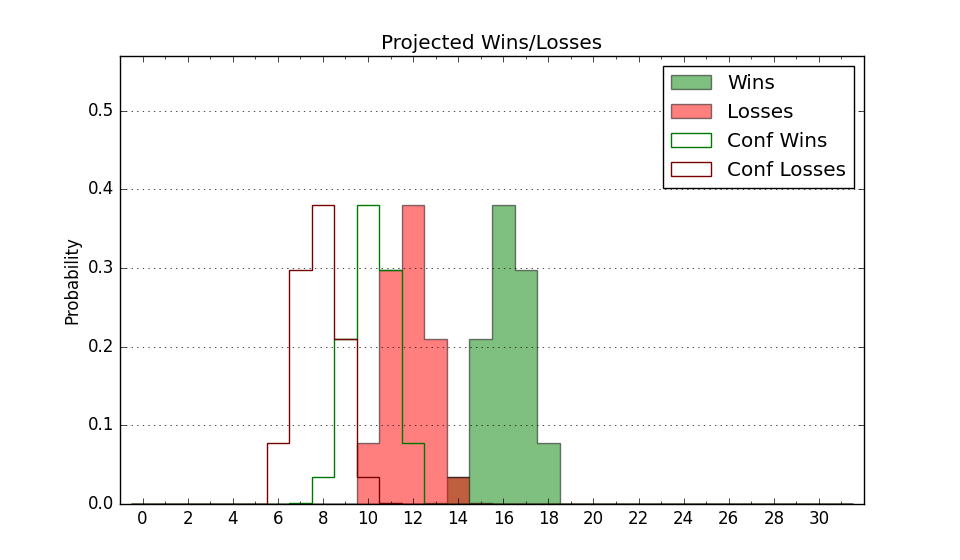

| Home | Game Probabilities | Conferences | Preseason Predictions | Odds Charts | NCAA Tournament |
| City: | Greenville, South Carolina | |
| Conference: | Southern (4th)
| |
| Record: | 7-6 (Conf) 13-10 (Overall) | |
| Ratings: | Comp.: -2.8 (199th) Net: -2.9 (199th) Off: 105.7 (223rd) Def: 108.6 (165th) SoR: 0.0 (105th) |
| Remaining | ||||||
|---|---|---|---|---|---|---|
| Date | Opponent | Win Prob | Pred. | |||
| 2/14 | @ VMI (356) | 85.0% | W 78-67 | |||
| 2/18 | East Tennessee St. (118) | 44.5% | L 69-71 | |||
| 2/21 | @ Wofford (222) | 42.2% | L 73-75 | |||
| 2/25 | The Citadel (347) | 93.0% | W 77-60 | |||
| 2/28 | @ Western Carolina (270) | 53.2% | W 75-74 | |||
| Previous | Game Score | |||||
| Date | Opponent | Win Prob | Result | Off | Def | Net |
| 11/3 | (N) High Point (79) | 19.7% | L 71-97 | -7.1 | -15.5 | -22.6 |
| 11/7 | Troy (135) | 49.2% | L 61-64 | -21.0 | 14.9 | -6.1 |
| 11/14 | @Northern Iowa (88) | 13.3% | L 54-70 | -8.3 | -4.6 | -12.9 |
| 11/23 | Queens (220) | 68.9% | W 90-79 | 23.3 | -11.6 | 11.8 |
| 11/27 | (N) Richmond (141) | 36.5% | W 73-72 | 2.4 | 8.1 | 10.5 |
| 11/28 | (N) Illinois St. (78) | 18.9% | L 65-72 | -0.1 | 2.9 | 2.8 |
| 12/3 | @Elon (204) | 35.9% | W 97-88 | 27.0 | -7.7 | 19.3 |
| 12/6 | Harvard (169) | 59.0% | W 79-69 | 8.3 | 2.9 | 11.1 |
| 12/18 | @Manhattan (337) | 74.2% | W 75-68 | -8.8 | 8.1 | -0.7 |
| 12/21 | Charleston Southern (226) | 71.7% | W 84-76 | 5.0 | 0.1 | 5.1 |
| 12/31 | Mercer (160) | 57.5% | W 74-72 | 0.0 | 0.4 | 0.4 |
| 1/3 | Western Carolina (270) | 79.4% | L 77-80 | -9.2 | -11.0 | -20.2 |
| 1/7 | @Chattanooga (294) | 58.5% | W 78-67 | 7.7 | 9.2 | 16.9 |
| 1/10 | VMI (356) | 95.1% | W 69-48 | -19.4 | 19.9 | 0.5 |
| 1/14 | @Samford (223) | 42.4% | W 77-73 | 4.0 | 6.6 | 10.5 |
| 1/17 | Wofford (222) | 71.4% | L 70-74 | -3.3 | -10.3 | -13.6 |
| 1/21 | @The Citadel (347) | 79.5% | L 75-77 | -8.1 | -11.5 | -19.6 |
| 1/23 | @UNC Greensboro (306) | 64.5% | W 89-66 | 26.6 | 3.1 | 29.7 |
| 1/29 | Samford (223) | 71.5% | W 78-73 | 8.5 | -10.2 | -1.7 |
| 2/1 | Chattanooga (294) | 82.8% | W 75-70 | 1.5 | -6.6 | -5.1 |
| 2/4 | @East Tennessee St. (118) | 19.0% | L 71-75 | -2.8 | 8.1 | 5.3 |
| 2/8 | UNC Greensboro (306) | 86.1% | L 64-67 | -17.9 | -5.6 | -23.5 |
| 2/11 | @Mercer (160) | 28.4% | L 64-69 | -7.4 | 9.9 | 2.6 |
| Stats & Trends | |||||
|---|---|---|---|---|---|
| Current | Day | Week | Month | Season | |
| Composite | -2.8 | +0.1 | -0.7 | -2.1 | -1.2 |
| Comp Rank | 199 | -1 | -9 | -34 | -58 |
| Net Efficiency | -2.9 | +0.1 | -0.7 | -2.3 | -- |
| Net Rank | 199 | +1 | -5 | -29 | -- |
| Off Efficiency | 105.7 | +0.1 | -1.0 | -0.6 | -- |
| Off Rank | 223 | -6 | -21 | -25 | -- |
| Def Efficiency | 108.6 | +0.0 | +0.3 | -1.7 | -- |
| Def Rank | 165 | +1 | -1 | -20 | -- |
| SoS Rank | 301 | -2 | +7 | -26 | -- |
| Exp. Wins | 16.2 | +0.0 | -1.2 | -1.9 | -0.4 |
| Exp. Conf Wins | 10.2 | +0.0 | -1.2 | -1.9 | -1.0 |
| Conf Champ Prob | 0.1 | +0.0 | -4.8 | -12.6 | -24.9 |

| Advanced Stats | ||
|---|---|---|
| Stat | Value | Rank |
| Off Eff FG % | 0.526 | 133 |
| Off Ast Ratio | 0.160 | 94 |
| Off ORB% | 0.298 | 193 |
| Off TO Rate | 0.176 | 338 |
| Off FT Ratio | 0.317 | 267 |
| Def Eff FG % | 0.499 | 126 |
| Def Ast Ratio | 0.143 | 144 |
| Def ORB% | 0.318 | 235 |
| Def TO Rate | 0.126 | 316 |
| Def FT Ratio | 0.272 | 23 |